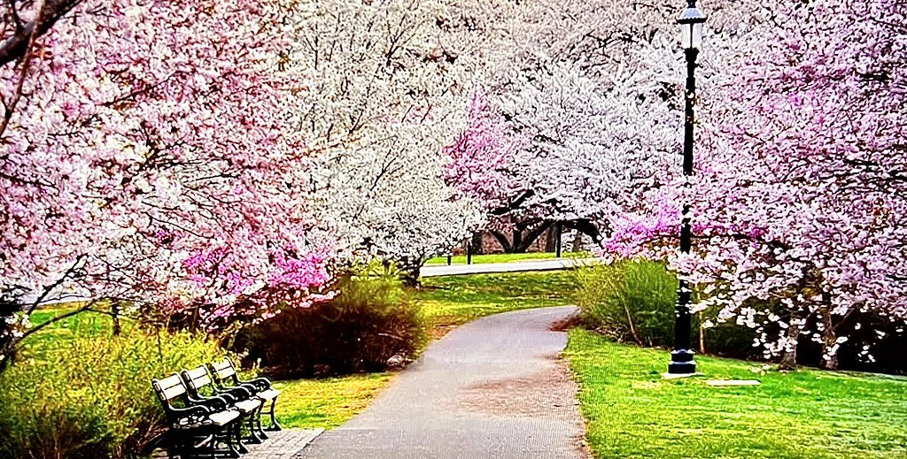
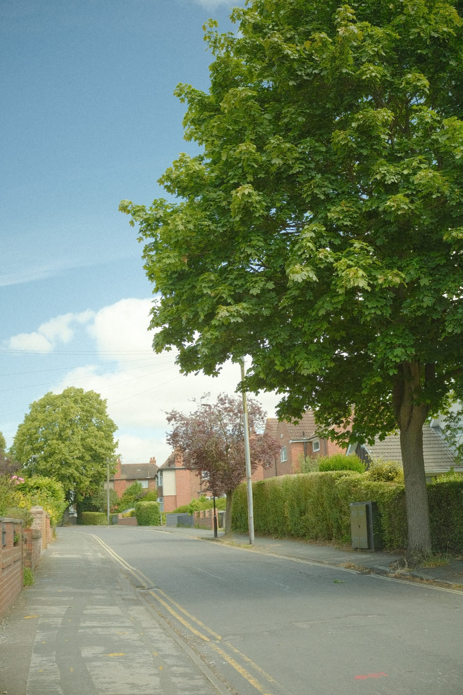
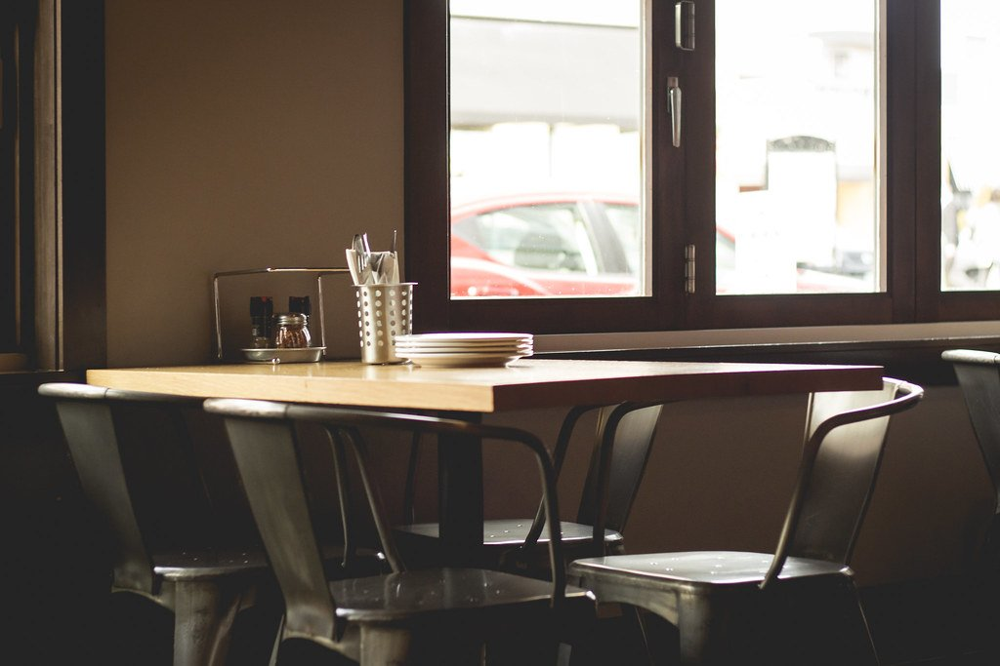
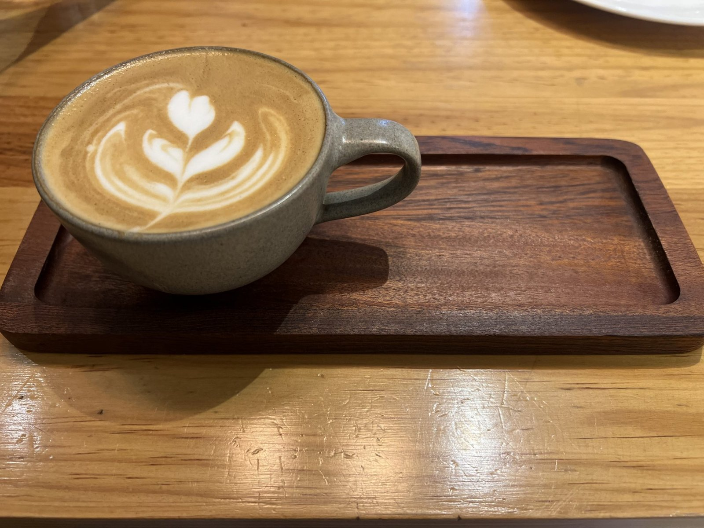

※掲載している写真はイメージ（フリー素材）です。実店舗の写真ではありません。
住宅街の中に、ひっそりと佇む隠れ家
当店は住宅街の中にあり、少し目立たない場所に位置しています。賑やかな通りから少し離れた、静かな一角だからこそ生まれる落ち着いた時間を、どうぞゆっくりとお過ごしください。

窓の向こうに広がる、湖畔のような景色
大きな窓からは、外光がたっぷりと差し込みます。窓の外には池や桜の木、広い空が見え、住宅街の中にいることを忘れてしまうような、湖畔のカフェを思わせる眺めが広がります。交通量も少なく、自然を感じながら静かに過ごせる、当店ならではの時間です。

カウンターとテーブルだけの、小さな空間
お席は、窓際のカウンター席と、テーブル席をご用意しております（座席数の詳細はご確認中）。大人数での賑わいよりも、少人数でゆったりと過ごせる空間を大切にしており、店内の雰囲気もスタッフの接客も、品のある落ち着いた時間をお届けします。

GALLERY
店内の雰囲気（イメージ）

おひとりでも、心地よく過ごせる時間
窓辺の光と緑を眺めながら、本を読んだり、ただぼんやりと過ごしたり。おひとりでのご来店のお客様も多く、静かに自分の時間を楽しめるのも、当店の魅力のひとつです。
ご来店前に、所在地やご利用にあたっての注意事項をご確認ください。
アクセス・ご利用案内を見る